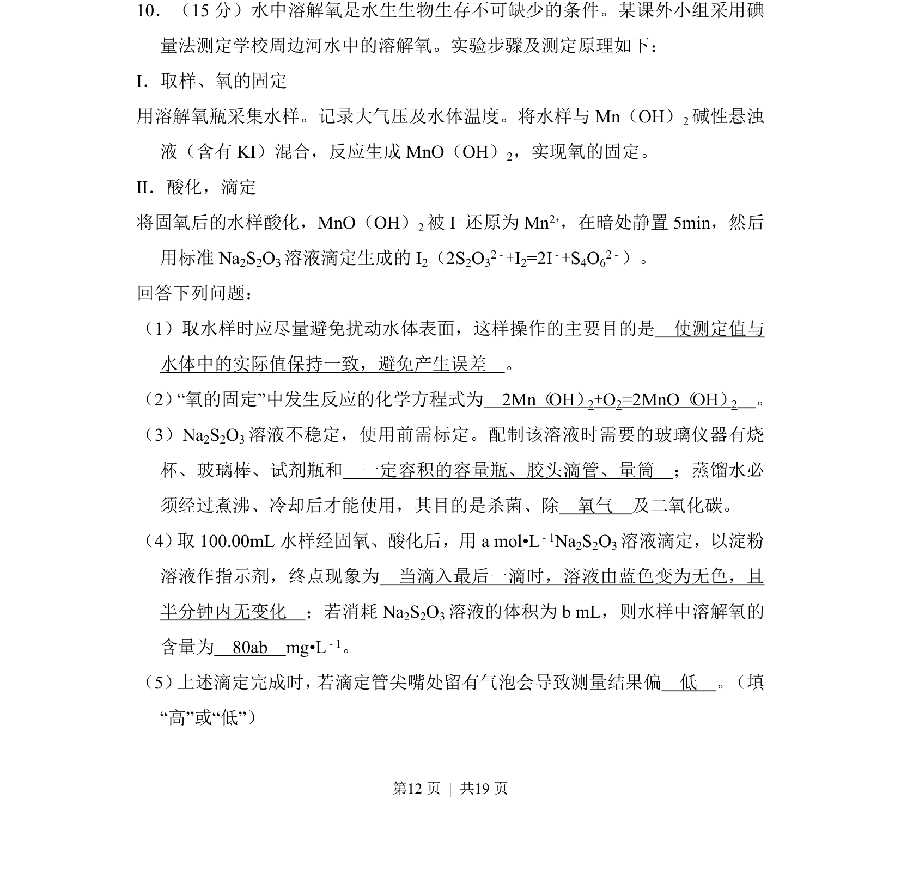
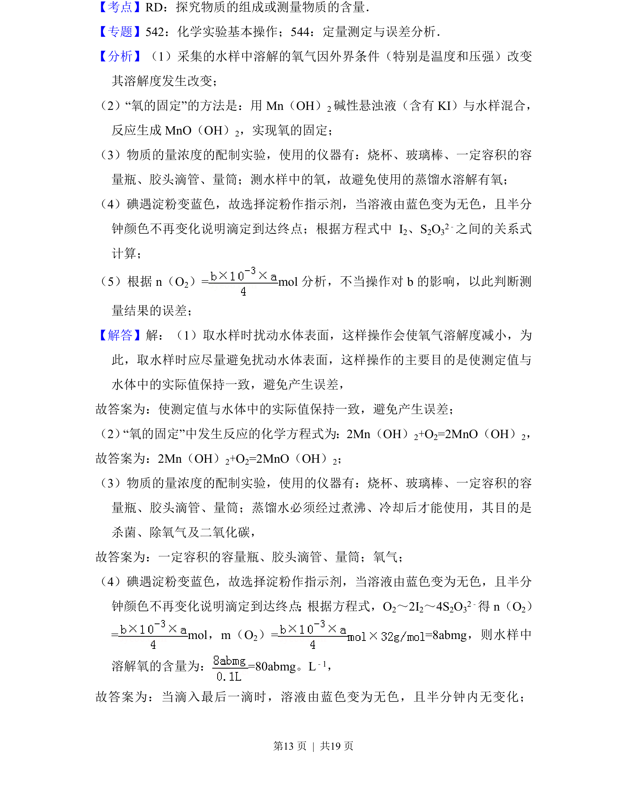
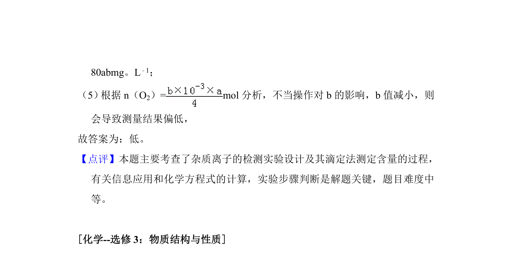

2017-新课标Ⅱ-10
考点：氧化还原滴定 化学计量 实验操作 误差分析
题面


摘要
碘量法测定水中溶解氧的原理、操作及误差分析。
关联考点
答案与解析


📄 原 PDF 第 12 页：
素材/真题/吉林/2008-2024·（吉林）化学高考真题/2017年高考化学试卷（新课标Ⅱ）（解析卷）.pdf
题干文本
10．（15分）水中溶解氧是水生生物生存不可缺少的条件。某课外小组采用碘 量法测定学校周边河水中的溶解氧。实验步骤及测定原理如下： Ⅰ．取样、氧的固定 用溶解氧瓶采集水样。记录大气压及水体温度。将水样与Mn（OH） 2碱性悬浊 液（含有KI）混合，反应生成MnO（OH） 2，实现氧的固定。 Ⅱ．酸化，滴定 将固氧后的水样酸化，MnO（OH）2被I ﹣还原为Mn 2+，在暗处静置5min，然后 用标准Na 2S2O3溶液滴定生成的I 2（2S2O32﹣+I2=2I﹣+S4O62﹣）。 回答下列问题： （1）取水样时应尽量避免扰动水体表面，这样操作的主要目的是 使测定值与 水体中的实际值保持一致，避免产生误差 。 （2）“氧的固定”中发生反应的化学方程式为 2Mn（OH）2+O2=2MnO（OH）2 。 （3）Na2S2O3溶液不稳定，使用前需标定。配制该溶液时需要的玻璃仪器有烧 杯、玻璃棒、试剂瓶和 一定容积的容量瓶、胶头滴管、量筒 ；蒸馏水必 须经过煮沸、冷却后才能使用，其目的是杀菌、除 氧气 及二氧化碳。 （4） 取100.00mL水样经固氧、酸化后，用a mol•L﹣1Na2S2O3溶液滴定，以淀粉 溶液作指示剂，终点现象为 当滴入最后一滴时，溶液由蓝色变为无色，且 半分钟内无变化 ；若消耗Na 2S2O3溶液的体积为b mL，则水样中溶解氧的 含量为 80ab mg•L﹣1。 （5） 上述滴定完成时， 若滴定管尖嘴处留有气泡会导致测量结果偏 低 。 （填 “高”或“低”）